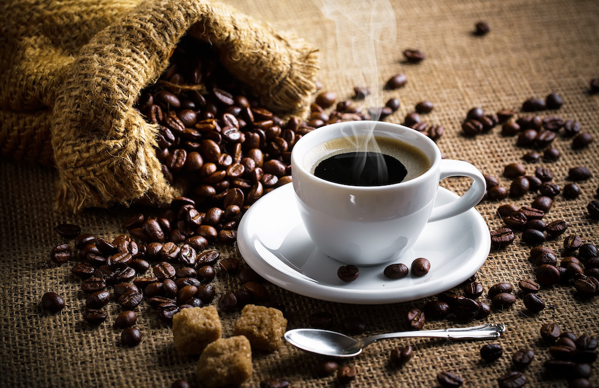

First week in Canada, mild winter.
Unek-unek tentang temanku si kopi

Si kopi, temanku?
Sejak kapan? Aku tidak ingat pasti. Yang kuingat, dulu aku tak suka padanya. Mengapa? Tentu saja karena dia pahit. Tidak seperti si susu kental manis atau si teh manis. Memangnya ada, orang yang suka pahit? Paling-paling, mereka menyentuh si kopi kalau ada si gula. Sesendok, atau dua, bahkan tiga. Kecuali kalau sudah diabetes.
Kalau ada yang manis, mengapa memilih yang pahit? Betul tidak? Ya, kecuali, kecuali kalau kamu memang suka segalanya yang pahit. Aku juga begitu. Dulu. Aku mau dengan si kopi, tapi kalau ada si susu, ada si gula. Dulu aku sama dengan kamu, tidak suka yang pahit. Makanya aku tidak mau dekat-dekat dengan si kopi. Dulu.
Tapi... Beberapa dari mereka bilang, si kopi itu baik, sangat baik. Dia itu begitu nikmat. Kata mereka. Membuatku ingin. Tapi banyak juga yang bilang, dia itu, tidak baik. Sebaiknya dijauhi saja. Jadi bagaimana? Tapi aku juga takut. Bagaimana kalau benar. Tapi aku terlalu ingin. Sangat ingin. Jadi aku harus bagaimana? Aku ingin berteman dengan si kopi. Tapi kalau yang lain menjauhiku, sebab aku dekat dengan si kopi, bagaimana? Meski menurutku, dia itu, sepertinya baik.
Bagaimana kalau kita berteman? Begitu tanyaku pada si kopi di suatu malam. Dia belum mengiyakan. Kutanya lagi malam setelahnya. Dia masih belum mengiyakan. Kutanya lagi malam berikutnya. Dan malam sesudahnya. Dan seterusnya.
Sekarang aku ingat. Aku ingat sejak kapan si kopi menjadi temanku.
Ya sejak malam itu. Malam kesekian. Aku membuat diriku pahit. Agar sama pahitnya dengan si kopi. Jadi kami sama. Aku butuh si kopi. Aku suka dia. Dia itu, baik. Nikmat. Maaf kalau kamu tidak setuju. Mungkin memang aku tidak lagi sama dengan kamu. Kamu masih benci kopi. Aku tidak. Maaf... Tapi aku percaya dia itu baik. Dia itu, sama denganku. Sama pahitnya. Karena si kopi, aku jadi lupa. Lupa kalau aku pahit.
Lalu aku mendekat. Dan memang benar. Dia itu, nikmat. Sangat. Jadi aku ingin lebih dekat. Semakin dekat. Semakin dia nikmat. Aku jadi ingin semakin dekat. Dan terus aku mendekat. Tapi, eh... tunggu.., dia tak sama lagi. Dia tidak lagi nikmat. Kurang pahit. Tidak seperti aku. Aku ini, sudah pahit sekarang.
Sebaiknya aku mendekat lagi. Sedekat-dekatnya. Sampai dia kembali terasa pahit. Tapi kemudian. Lagi-lagi, dia kurang pahit. Dan aku, sepertinya, malah jadi lebih pahit daripada dia.
Aku terus mendekat. Lagi. Lagi. Lagi. Semakin dekat. Semakin lekat. Dan aku sangat dekat. Sangat lekat. Tapi tunggu, ini, tunggu, aku ini terlalu dekat. Aku malah menjadi sangat pahit. Aku tidak mau, Aku tidak suka menjadi terlalu pahit. Tapi aku sudah sangat dekat, sudah terlalu lekat. Aku terlalu dekat, sampai aku lupa bagaimana rasaku yang sebelumnya...
